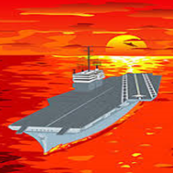

Spēle “Miglainā jūra” ir paredzēta 2-6 spēlētājiem jebkurā vecuma grupā. Galvenais mērķis ir līdz spēles beigām sakrāt pēc iespējas vairāk punktu. Punktus iegūst gremdējot kuģus.
Spēles gaita
Spēlētāji pēc kārtas šauj pa laukumu atklājot rūtiņas. Ir dažādi lauciņu veidi un katram ir savas īpašības.
Lauciņu veidi
- Tukšais lauks
- spēlētāja gājiens beidzas. - Zelta kuģis
 - spēlētājs iegūst divus punktus un drīkst šaut vēlreiz. - Kuģis
- spēlētājs iegūst punktu un drīkst šaut vēlreiz. - Pirāts
 - spēlētājam tiek atņemts punkts, gājiens beidzas.
- spēlētājam tiek atņemts punkts, gājiens beidzas.
- Nāriņa
- spēlētājs iegūst papildus divus gājienus. - Astoņkājis
- spēlētāja gājiens beidzas, tiek izlaists nākošais gājiens.
Ņem vērā
Kuģi savā starpā nesaskaras. Ja tiek nogremdēts kuģis tad tam apkārt esošie robežlauciņi tiek atklāti. Taču to īpašības netiek izmantotas uz konkrēto spēlētāju.
Spēles beigas
Spēle beidzas, kad pēdējais kuģa lauciņš tiek nogremdēts. Uzvar spēlētājs, kuram ir visvairāk punktu.